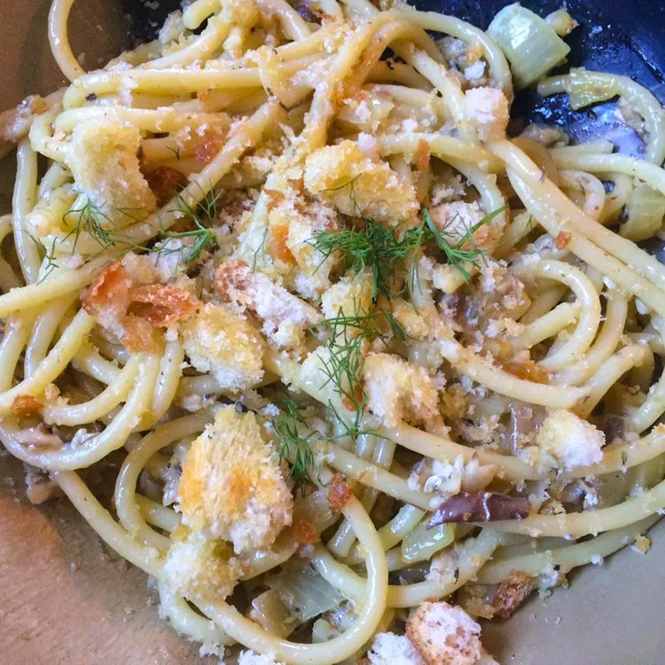

Pasta con le Sarde

Description
A simple sardine pasta that is easy to make with little time required! Bon Apple Teeth.
Ingredients
- 6 tablespoons extra-virgin olive oil, divided
- 3/4 cup dry bread crumbs
- 1 pinch saffron
- 1/4 cup white wine
- 8 ounces bucatini pasta
- 1 cup diced yellow onion
- 1 cup diced fennel bulb
- 1 pinch salt, or to taste
- ¼ cup golden raisins
- 2 cloves garlic, minced
- 1 anchovy fillet
- ¼ cup toasted pine nuts
- 1 pinch red pepper flakes
- 2 (4 ounce ) cans sardines packed in oil, drained and crumbled
- 3 tablespoons chopped fennel fronds or more to taste
Instructions
- Heat 2 tablespoons oil in a skillet over medium heat. Add bread crumbs; cook and stir until crispy and toasted,
2 to 5 minutes. Transfer bread crumbs to a bowl.
- Grind saffron threads with a mortar and pestle; pour white wine into the mortar and stir to combine.
- Bring a large pot of lightly salted water to a boil. Cook bucatini in boiling water, stirring occasionally,
until almost fully cooked through but still firm to the bite, 10 to 11 minutes. Drain, reserving 1/2 cup of the pasta water.
- Heat remaining 4 tablespoons olive oil in large skillet over medium heat. Add onion, fennel, and salt; cook and stir until onion is soft, about 10 minutes.
Add raisins, garlic, and anchovy; cook and stir until heated through, about 1 minute.
- Pour wine mixture into the skillet and cook until almost evaporated, about 2 minutes.
Pour 1 ladleful reserved pasta water into the skillet and bring to a simmer. Stir in pine nuts and red pepper flakes; simmer until flavors combine and sauce is reduced, about 5 minutes.
- Stir bucatini and sardines into the skillet. Increase the heat to high and cook, stirring frequently and adding more reserved pasta water as necessary,
until sauce and pasta are heated through, about 5 minutes. Remove from the heat.
- Ladle into bowls and top with fennel fronds and toasted bread crumbs.